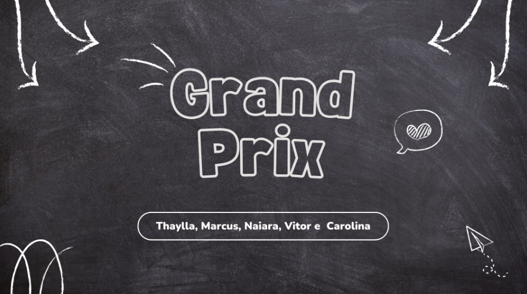

Desenvolvimento de uma solução sustentável, inovadora e tecnicamente viável, baseada nos princípios dos 3Rs, reduzir, reusar e reciclar. A proposta será apresentada por meio de um relatório técnico completo e um pitch estruturado, evidenciando o potencial de redução da pegada de carbono do componente e sua aplicação prática na indústria automotiva. .
Habilidades e Competências: Não informado.

Anexo